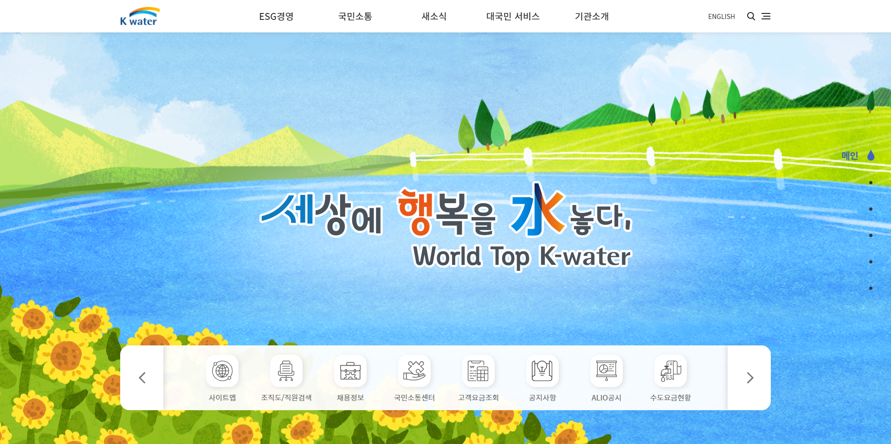

Clone Coding: 한국수자원공사


Tools & plugin
- html, css, javascript, jquery, vs code
- fullpage, slick
Point
- fullpage 플러그인 사용
- slick paging 적용하기
- youtube 영상 임베드 하기 - iframe 태그 사용
- header:hover 이벤트 - ::after, @keyframes css 애니메이션 사용
- inner stroke 적용하기 - box-shadow 사용
- table 태그 - tr, th, td
Insights
- fullpage 사용시 header의 position: fixed; 사용에 신경 쓸 것
- youtube 영상의 경우 video 태그가 아닌 iframe 태그로 임베드
- inner shadow는 box-shadow로 구현
box-shadow: 0 1px 0 1px #ddd inset;